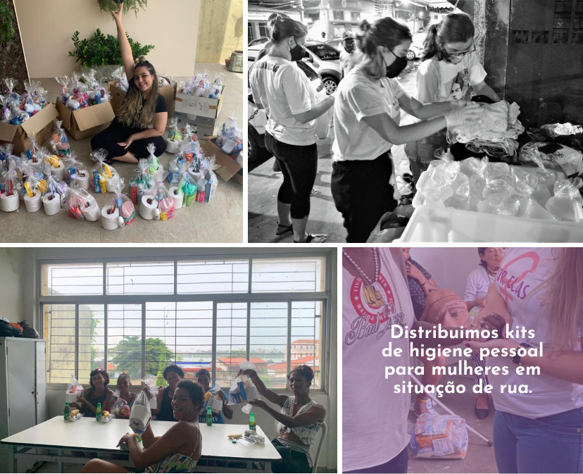
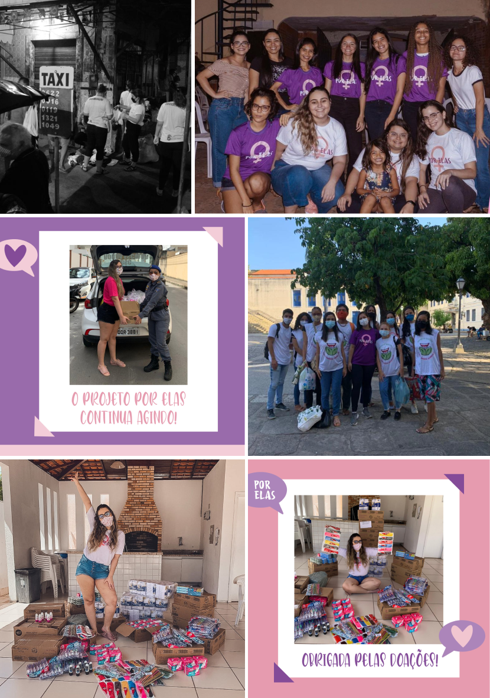
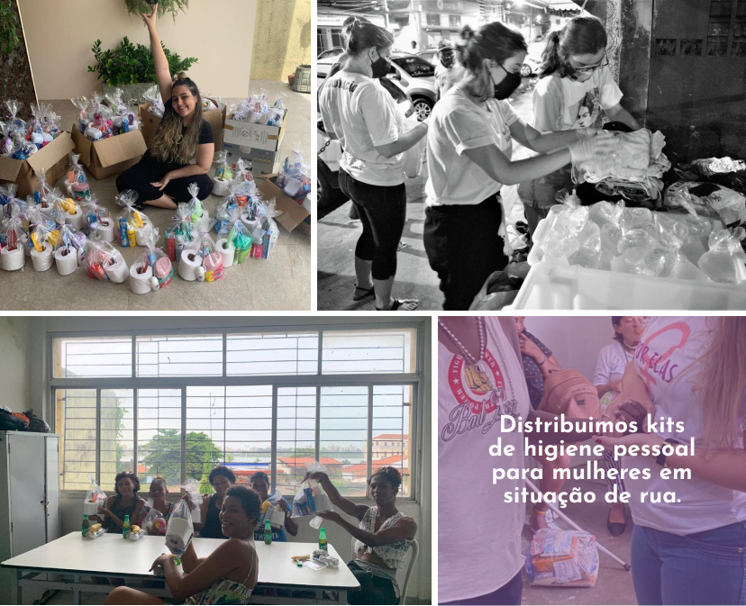
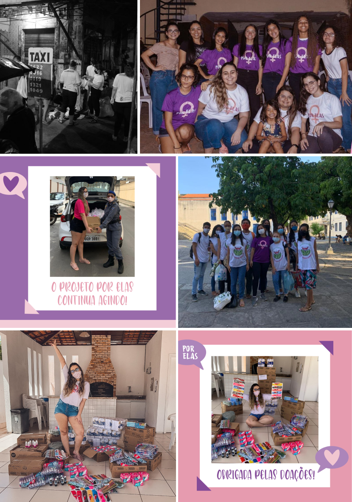

SEJA UMA MULHER QUE LEVANTA OUTRAS MULHERES
Que o poder público não liga para mulheres não é novidade, mas até quando mulheres em péssimas condições continuarão vivendo sem proteção e cuidado?

Você sabia que milhares de mulheres são expostas a todo o tipo de violência sexual, social e moral todos os dias? Nós, do Projeto Por Elas, sabemos que essas cidadãs precisam de um olhar diferenciado e fazemos o possível para mudar essa realidade.
Fontes: Agência Brasil, Fórum Brasileiro de Segurança Pública e MPE/SP.

"Meninas por todo o mundo faltam às aulas durante o período menstrual ou, até mesmo, deixam a escola. Meninas e mulheres por todo o mundo sofrem estigmas sociais causados pela menstruação. Meninas e mulheres por todo o mundo não têm acesso a produtos básicos de higiene menstrual e saneamento básico." - Trecho retirado do QG Feminista.
12,5% das mulheres ao redor do mundo estão na condição de pobreza menstrual.
No Brasil, 19% das mulheres entre 18 e 25 anos não possuem condições de comprar absorvente, devido ao elevado preço.
Fonte: Sempre Livre.
Nosso projeto nasceu como um sonho de mudar esse cenário e, posteriormente, fomos ampliando aos poucos. Estamos crescendo a cada dia mais. Somos o primeiro e único projeto no Maranhão voltado para a pobreza menstrual e em panorama nacional também estamos entre os únicos.
Unir e mobilizar um grupo de pessoas para pensar e realizar ações para mulheres em São Luís - MA, proporcionando acolhimento e melhores condições para aquelas que estão em situações vulneráveis.
Estamos vivendo uma pandemia. Esse cenário mundial amplia todas as desigualdades existentes: por mais que a saúde seja o foco no momento, diversos desdobsramentos sociopolíticos precisam ser considerados. Especialmente na vida das mulheres.
 



“As relações humanas só fazem sentido com apoio mútuo. É por isso que estamos orgulhosos das relações que já desenvolvemos, unidos em prol de algo muito maior.”
“Tenho um sentimento muito forte de agradecimento, vocês cuidam muito de nós que moramos na rua, e minhas filhas vão ficar muito ‘feliz’ por essas coisas de higiene. Elas não ‘tão’ aqui comigo por causa dessa doença, estamos com medo.” (Arlindo, ao receber kits do Projeto Por Elas)
“Faz horas que estou aqui, e nenhum carro parou. Vocês vieram e me deram coisas pra eu ficar cheirosa, muito obrigada, essa vida é dura, mas Deus manda os anjos dele pra ajudar.” (Mariene, 51 anos, ao receber um kit do Projeto Por Elas)
“Nem acredito, ontem foi meu aniversário e eu não tinha nada, e hoje vocês trouxeram esse presente, vocês são uns amores, estão no meu coração, obrigada por sempre nos ajudar.” (Iara, 56 anos, ao receber um kit do Projeto Por Elas)
Conheça também a nossa lojinha virtual que contém produtos exclusivos, tais como canetas e bottons personalizados!
Entrar em contato*Toda a renda arrecadada será revertida para as ações do projeto.
Uma das nossas estratégias para não pararmos de atuar durante a pandemia é a de fazer parcerias com outros programas.
a luta é das mulheres, para as mulheres! vamos juntas?